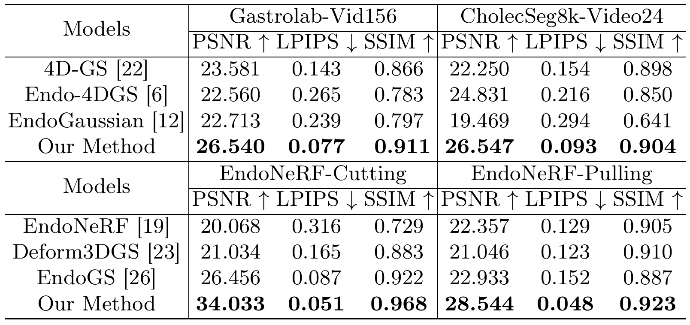

Network
The overall flow of Mono-DDGS.
Experimental Results
Quantitative Results

Qualitative Results

1Bournemouth University 2Shanghai University †Corresponding Author
Our
4D-GS
Endo-4DGS
EndoGaussian
This paper presents a novel Dual-Stage Decoupled Gaussian Splatting framework, Mono-DDGS, for dynamic monocular endoscopic scene reconstruction that does not rely on additional auxiliary information (e.g., depth and masks). A dual-stage decoupled Gaussian deformation strategy decouples the time-invariant spatial structure reconstruction from temporal deformation modelling, alleviating severe geometry-motion entanglement and geometry-drift over time under limited viewpoints and dynamic motion in Stage I, thereby enabling the modelling of complex non-rigid soft-tissue deformation while preserving the canonical geometry in Stage II. A hierarchical triprojection decomposition models spatial-temporal interactions using nine factorised planes, enabling expressive yet controlled non-rigid deformation modelling while preserving the canonical geometry and temporal coherence during decoding. Finally, we propose a semi-automatic specular reflection detection pipeline to construct a dedicated new dataset, which is then used to optimize the specular reflection removal network for suppressing highlights in rendered views. Extensive experiments on both monocular and stereo endoscopic datasets demonstrate that our method consistently outperforms state-of-the-art approaches.
